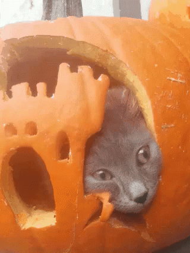
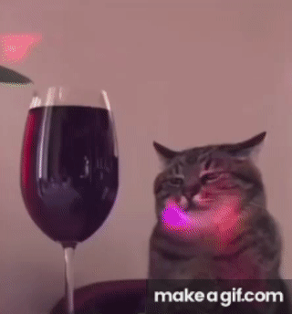
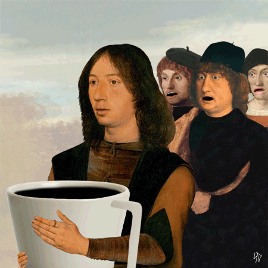
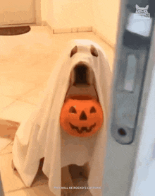

Fr–So mit noch offenen Terminen · für deine Gruppe ✂ Blatt abreißen. Das Semester leider nicht.
✦ · ✧ · ✦ · ✦ · ✧ ·
◕‿◕
NOCH EIN BISSCHEN DURCHHALTEN
🌷 🌼 🌸 🌻 🌷
✧ ✨ ✧
[ Inhaltsverzeichnis ]
🎃 🕯️ 💀 🎃 🕸️ 🎃 💀 🕯️ 🎃
+++ EILMELDUNG: semester existiert weiterhin +++ kaffee ist eine lebensform +++ bitte drucken sie das internet nicht aus +++
⚠ hirn.exe Keine Rückmeldung📁 motivation Dieser Ordner ist leer.☕ Kaffee 98 Installation erfolgreich.
KALENDER IMPORTIEREN
--:--:--
TODAY

SEMESTER PROGRESS
SEMESTER REMAINING
MEME-ECKE
STATISTICS

☕ GEMEINSCHAFTSKAFFEE.exe
Die Bohne ist stärker als der Wille.


Ersparnis-Rechnung bis jetzt
BOHNENBUCHHALTUNG
Vergleich: früher 3,80 € pro Person und Uni-Tag. Davon ziehen wir hier die gesamten Gemeinschaftsausgaben ab. Das ist eine Vergleichsrechnung, keine Pro-Kopf-Abrechnung. Eine echte Gruppenersparnis benötigt die Anzahl der Kaffeetrinker. Abgeschlossene Tage zählen erst nach dem letzten Termin; nur Tage im konfigurierten Semester zählen.